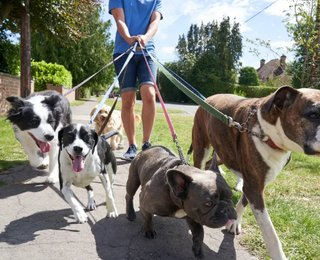

Serviços para cães e gatos
A NortePet propõe três serviços, pensados para manter a rotina do animal quando o tutor não pode estar presente.
Opções de acompanhamento

- Visita ao domicílio: alimentação, água fresca, limpeza da caixa de areia e um período de companhia e brincadeira.
- Passeio acompanhado: passeio para cães em zonas perto de casa, com pausa para água e recolha de dejetos.
- Visita prolongada: mais tempo de companhia e de rotina, indicada para animais mais dependentes ou que ficam muitas horas sozinhos.
Em todos os serviços, o tutor recebe um resumo no final da visita.
Resumo dos serviços
| Serviço | Indicado para | Duração | Preço ilustrativo |
|---|---|---|---|
| Visita ao domicílio | Cães e gatos | 10 € | |
| Passeio acompanhado | Cães | 10 € | |
| Visita prolongada | Cães e gatos | 18 € |
Antes da primeira visita
Para que tudo corra bem, pedimos ao tutor que prepare:
- A chave ou o acesso à casa, combinados com antecedência.
- A ficha do animal, com horários de refeição, hábitos e medicação, se existir.
- O contacto do veterinário e de uma pessoa a quem possamos ligar em caso de urgência.
- A comida, os acessórios e a trela, num local de fácil acesso.
Próximo passo
Para pedir informações ou combinar uma visita de apresentação, consulte a página de contacto.